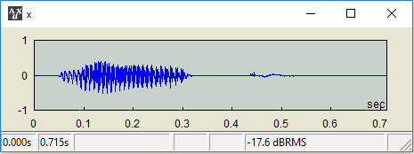
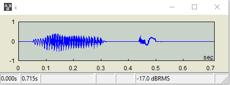

..
x = any expression with ..
|
x(id) = any expression with ..
|
x(id1:id2) = any expression with ..
|
x(id1:id2,jd1:jd2) = any expression with ..
|
x(t1~t2) = any expression with ..
|
Replicator; Replicate what's in the left hand side to the right hand side
This applies to multiple cases of expressions, not necessarily tied to one data type.
Notes
|
- Whatever is on the left hand side is being replicated to the right hand side with .. . Therefore,
very_long_variable_name = any_function(..)
is equivalent to:
very_long_variable_name = any_function(very_long_variable_name)
- The dot (.) notation also applies; therefore, the following is also an equivalent statement:
very_long_variable_name = ...any_function
as long as any_function supports the object function style.
- Conceptually, you might understand this as a sort of an advanced compound assignment operator:
x = x + 50 can be written as either x += 50 or x = .. + 50
On the other hand, x = sqrt(x) can't be written with a regular compound assignment operator, but .. works perfectly: x = sqrt(..)
- This feature will save you from tedious typings or copy-pastings across left and right hand sides.
|
Examples
|
- You have a vector with a long variable name, if you append a value to it. You may write it in the vector form or use ++
long_var_name = [long_var_name more_values]
long_var_name = long_var_name ++ more_values or
long_var_name ++= more_values
But if values are inserted before it, you can't use ++=. Then, instead of typing long_var_name again on the RHS, just
long_var_name = [values ..] or
long_var_name = values ++ .. will do it.
|
- You want to modify a part of a signal: for example,
AUX> x=wave("mop");

To distort the signal from 400 to 500 ms by applying sqrt, do this:
AUX> x(400~500) = ...sqrt;

- This is a more efficient way of coding. Internally, the expression x(400~500) = x(400~500).sqrt evaluates x(400~500) twice for the LHS and RHS, but the use of .. bypasses one.
|
Created with the Personal Edition of HelpNDoc: Full-featured multi-format Help generator